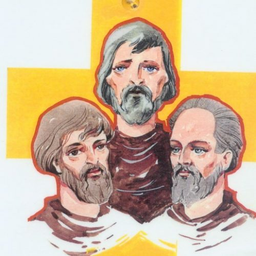
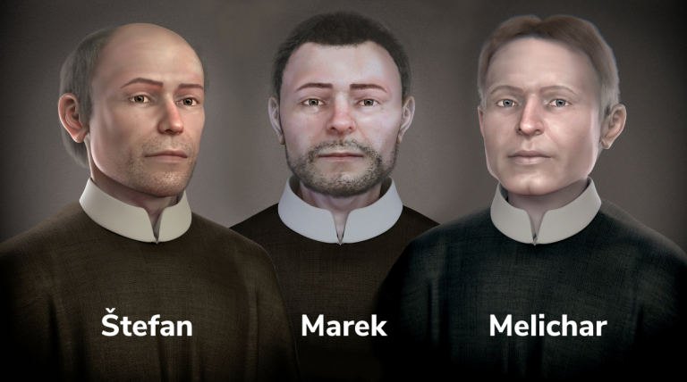

O nás
Čo je eRko?
eRko – Hnutie kresťanských spoločenstiev detí Je detská organizácia s celoslovenskou pôsobnosťou. Základom činnosti hnutia je pravidelná mimoškolská práca s deťmi v malých spoločenstvách – stretkách. Program eRka zabezpečujú vyškolení dobrovoľníci. Združuje viac ako 7000 členov. eRko bolo zaregistrované ako občianske združenie v roku 1990.
Patróni eRka
Patróni eRka – sv. Košickí mučeníci (Štefan, Melichar a Marek) Zomreli v Košiciach mučeníckou smrťou 7.9.1619.Zabili ich povstaleckí vojaci za to, že sa nechceli vzdať viery.Ježiš od nich žiadal svedectvo o prítomnosti lásky vo svete. Svedectvo pre ľudí, ktorí už prestali v lásku veriť, ktorým láska chýba v konaní. Aby táto viera v srdciach ľudí znovu ožila, aby sa ľudia o láske presvedčili, podali Marek, Štefan a Melichar dôkaz - obetu vlastného života, čím sa najviac mohli podobať Ježišovi.  
Akcie aké robíme
- 1. Detský čin pomoci
- 2. Sviečka za nenarodené deti
- 3. Dobrá novina
- 4. Pôst
- 5. Deň počatého dieťaťa
- 6. Púť detí
- 7. Tábory